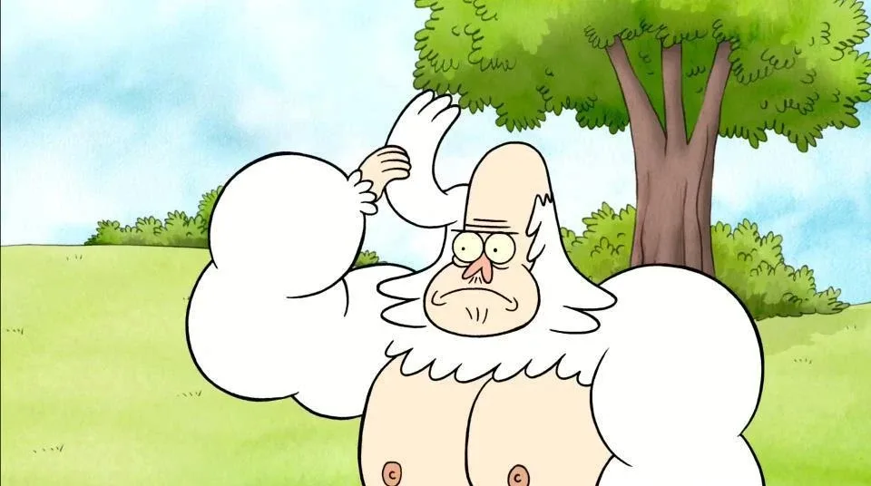

Cнежный человек, которому 300 лет. Скипс получил право на бессмертие и вечные познания, но обязан выполнять церемониальные танцы каждый год в день своего рождения, иначе он умрёт в муках, медленно рассыпавшись в прах. В одной из серии это едва не случается по вине Мордекая и Ригби. Скипс много работает и всегда выполняет свои обязанности. Скипс выглядит очень равнодушным и бесчувственным, но всегда готов помочь Мордекаю и Ригби, когда они попадают в беду. Спасая друзей, он часто сообщает, что сталкивался с таким раньше и предлагает подходящий выход из ситуации. Если что-либо не получается, как он пытается сделать, он применяет метод «по-скиповски», яркий пример — серия «Тело Ригби». В 33-й серии третьего сезона он рассказывает секрет, почему постоянно прыгает на ноге, а не ходит (это связано с его любовью и обещанием припрыгивать до конца жизни). Однажды Скипс рассказал Мордекаю и Ригби про то, что его любимая погибла во время бала в школе во время битвы с Клоргбейном Разрушителем, и Скипс стал бессмертным из-за того, что хочет остановить Рогнара навсегда. В серии про чемпионат по боулингу Скипс признаётся, что его настоящее имя — Уолкс. Имеет кузена Квипса, который в отличие от него всегда шутит (причём каждый раз неудачно), не имеет мускулов и носит верх. В оригинале его озвучивает Марк Хэмилл.